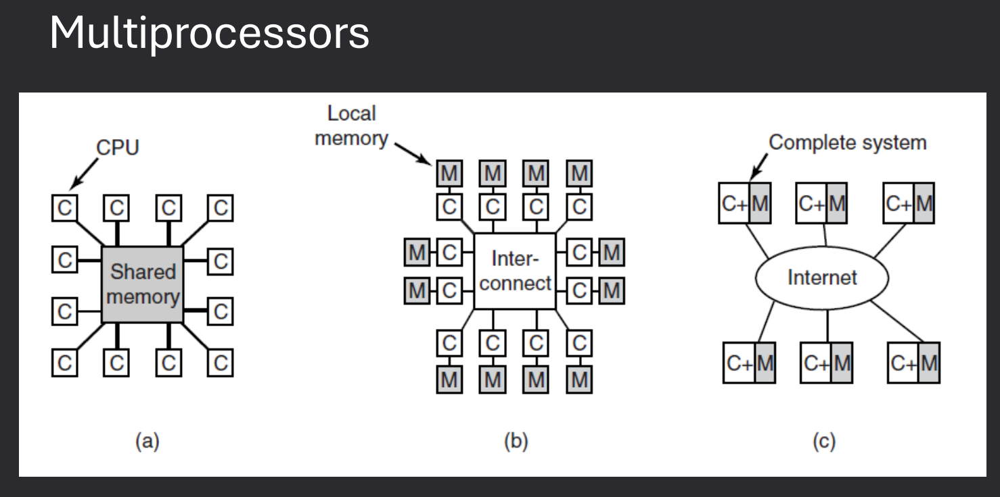
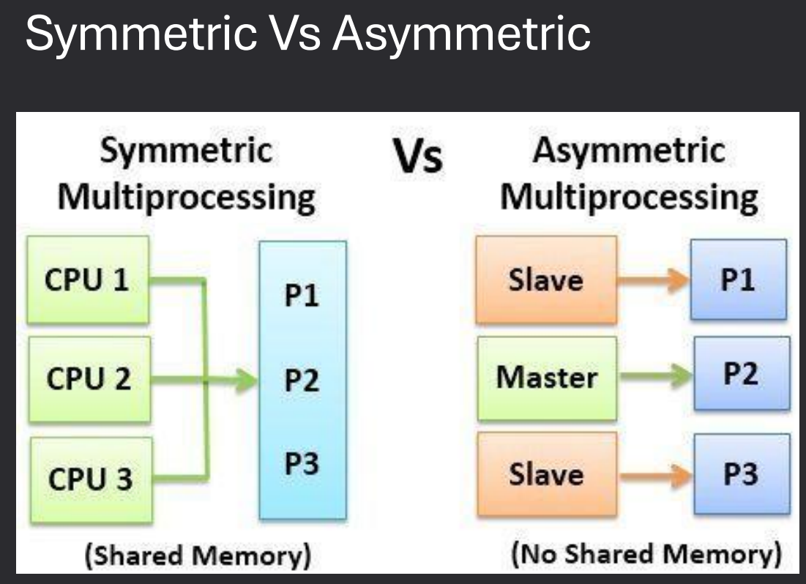
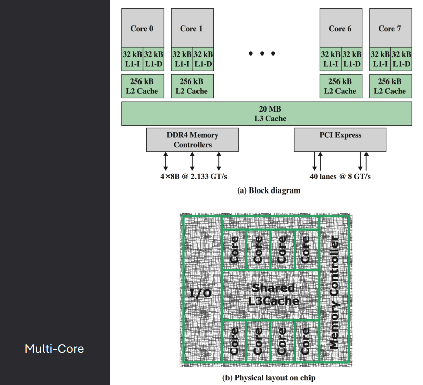
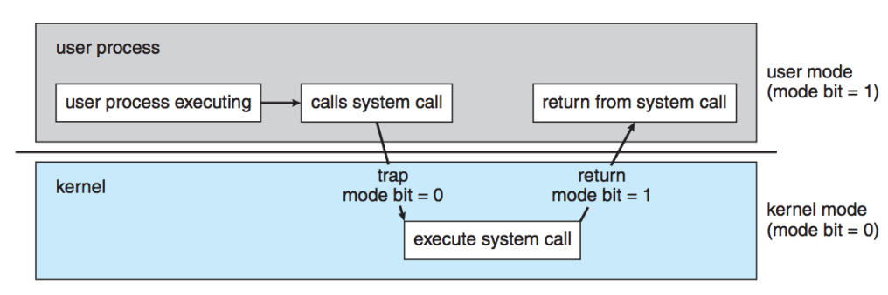
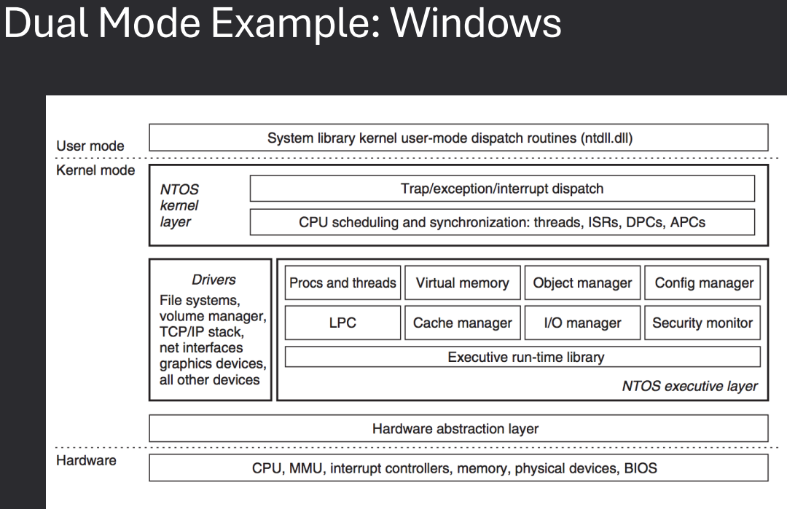
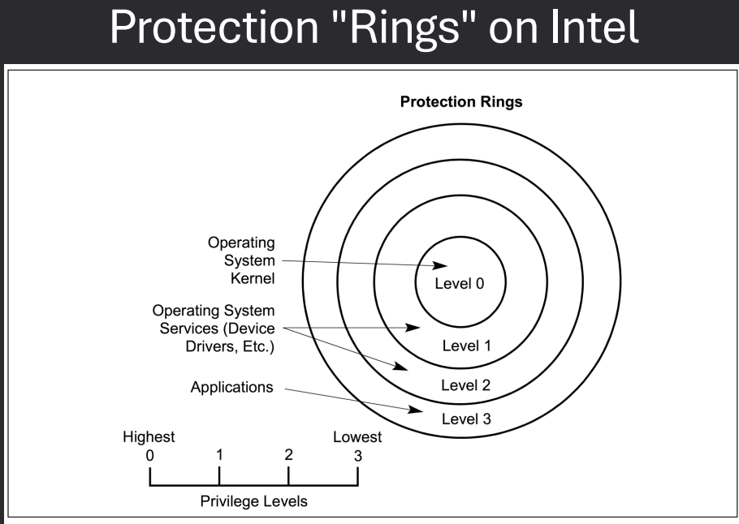

Lecture 2
Date Taken: Fall 2025
Status: Completed
Reference: LSU Professor Daniel Donze, ChatGBT
What's Covered?
- Computer Architecture
- Hardware
- Softwares Programming
- Virtualization
Background
Operating System Services (2 & 3)
Operating systems also provide services that improve communication, reliability,
efficiency, and security within the system:
- Communications - Processes often need to exchange information.
- This can happen on the same computer or across a network between different computers.
- Communication methods include shared memory (both processes use the same memory area)
and message passing (the OS moves packets of data between processes).
- Error Detection - The OS must constantly watch for possible errors.
- Errors may occur in hardware (CPU, memory, I/O devices) or in user programs.
- For each error, the OS takes appropriate action to keep the system stable and consistent.
- Debugging tools provided by the OS help users and programmers identify and fix problems.
- Resource Allocation - When multiple programs or users are active,
resources must be shared fairly.
- Resources include CPU time, memory, file storage, and I/O devices.
- The OS decides who gets what resources, and for how long, to maximize efficiency.
- Logging - The OS keeps track of resource usage.
- Records how much CPU, memory, and storage each user or process consumes.
- Useful for system monitoring, billing, and performance troubleshooting.
- Protection and Security - Ensures safety of processes and data.
- Protection: Prevents processes from interfering with one another,
and controls access to resources.
- Security: Defends against external threats by requiring authentication,
controlling file access, and blocking unauthorized use of devices.
System Boot
The boot process is how a computer starts up its operating system. It begins the moment power is turned on and continues until the OS is fully running.
- Startup Location - When power is initialized, execution begins at a fixed memory location.
- OS Availability - The operating system must be accessible to the hardware so it can be started.
- BIOS - The Basic Input-Output System (BIOS) looks for a bootable device and loads the bootloader.
- Bootstrap Loader - A small piece of code stored in ROM or EEPROM that finds the kernel, loads it into memory, and starts it.
- Two-Step Process - Sometimes a boot block at a fixed location is loaded by ROM code, which then loads the bootstrap loader from disk.
- UEFI - Modern systems use the Unified Extensible Firmware Interface (UEFI) instead of BIOS, offering more advanced features.
- GRUB - A common bootstrap loader that allows selecting a kernel from multiple disks, versions, or kernel options.
- Kernel Running - Once the kernel is loaded, the system is considered up and running.
- Boot States - Bootloaders often support different modes, such as single-user mode for maintenance or troubleshooting.
MultiProcessor / Parallel Systems
Multiprocessor systems use more than one CPU to increase performance, reliability, and efficiency. These systems can be designed in different ways depending on how processors communicate and share resources.
- Multiprocessor Systems - A computer with more than one CPU working together.
- Tightly-Coupled Multiprocessors - Processors share the same memory and clock. Communication happens through shared memory.
- Loosely-Coupled Multiprocessors - Processors do not share memory or a common clock. Communication happens through message-passing.
- Examples - Cluster systems are a common form of loosely-coupled multiprocessors.



Caching
Cache is a smaller, faster memory that stores copies of frequently accessed data from main memory.
It reduces the time to access data and improves overall system performance.
Caches are organized in levels (L1, L2, L3) based on their proximity to the CPU.
Caches use various strategies for data management, including write-through and write-back policies.
Command Line Interpreter
The command-line interpreter (CLI), or shell, is a program that reads and executes commands from the user.
It provides an interface for users to interact with the operating system by typing commands.
Examples include Bash (Linux), Command Prompt (Windows), and PowerShell (Windows).
The shell can execute built-in commands and launch other programs.
Graphical User Interface
A graphical user interface (GUI) allows users to interact with the operating system through graphical elements like windows, icons, and menus.
GUIs are more user-friendly than command-line interfaces, especially for non-technical users.
Examples include Windows Explorer (Windows), Finder (macOS), and GNOME/KDE (Linux).
GUIs often include features like drag-and-drop, context menus, and visual feedback.
Many operating systems support both CLI and GUI, allowing users to choose their preferred method of interaction.
Touchscreen Interfaces
Touchscreen interfaces are designed for devices with touch-sensitive screens, such as smartphones and tablets.
They allow users to interact with the operating system using gestures like tapping, swiping, and pinching.
Examples include iOS (Apple devices) and Android (various manufacturers).
Touchscreen interfaces often feature large icons and buttons for ease of use.
I/O Devices
Input/output (I/O) devices are hardware components that allow a computer to communicate with the external world.
Common input devices include keyboards, mice, and touchscreens, while common output devices include monitors, printers, and speakers.
The operating system manages I/O devices through device drivers, which are specialized programs that translate OS commands into device-specific operations.
Examples of I/O devices include:
- Input Devices: Keyboard, Mouse, Touchscreen, Scanner, Microphone
- Output Devices: Monitor, Printer, Speakers, Headphones
- Storage Devices: Hard Drive, SSD, USB Flash Drive, Optical Drive
- Network Devices: Network Interface Card (NIC), Wi-Fi Adapter, Router
Direct Memory Access (DMA)
Direct Memory Access (DMA) is a feature that allows certain hardware subsystems to access main memory independently of the CPU.
This improves performance by offloading data transfer tasks from the CPU, allowing it to focus on other processing tasks.
DMA is commonly used for high-speed data transfers, such as disk I/O and network communication.
The DMA controller manages the data transfer process, coordinating between the device and memory.
Interrupts
An interrupt is a signal sent to the CPU by hardware or software indicating an event that needs immediate attention.
When an interrupt occurs, the CPU temporarily halts its current operations, saves its state, and executes an interrupt handler to address the event.
After handling the interrupt, the CPU resumes its previous tasks.
Interrupts are essential for efficient I/O operations and real-time processing.
Types of interrupts include:
- Hardware Interrupts: Generated by hardware devices (e.g., keyboard, mouse, network card) to signal events like data availability or errors.
- Software Interrupts: Generated by software instructions to request system services or signal exceptions (e.g., division by zero).
- Maskable Interrupts: Can be ignored or delayed by the CPU using interrupt masking techniques.
- Non-Maskable Interrupts (NMI): Cannot be ignored and are used for critical events like hardware failures.
Security and Protection in Modern Computers
Modern computers implement various security and protection mechanisms to safeguard data and resources.
These include:
- CPU Protection
- Dual-Mode operation for CPU
- CPU Modes: User Mode and Kernel Mode to restrict access to critical system resources.
- Goal - Protect OS from user-level software and support features like process scheduling
- I/O Device Protection - Gives the OS ultimate authority over I/O devices
- Memory Protection: Prevents processes from accessing memory allocated to other processes.
Dual-Mode: Supervisor vs. User
Modern CPUs support at least two privilege modes: user mode and supervisor (kernel) mode.
- User Mode: Regular applications run in user mode, where access to critical system resources is restricted. This prevents user programs from directly interacting with hardware or sensitive memory areas, enhancing system stability and security.
- Supervisor (Kernel) Mode: The operating system kernel runs in supervisor mode, which has full access to all hardware and system resources. Only trusted OS code executes in this mode, allowing it to manage processes, memory, and I/O devices.
The CPU switches between these modes using special instructions (such as system calls or interrupts).
This separation ensures that user applications cannot compromise the integrity of the operating system or other programs.
System Calls
Processes are generally split into two groups
- Kernel Processes - which have elevated privileges. Kernel processes can access the disk to make read & write request
- User Processes - which have limited privileges. User processes cannot access the disk to make read & write request
When a user process needs to perform actions requiring kernel level access, like file operations, it uses system calls.
These calls act as a controlled interface, allowing user processes to request services from the operating system securely.
Simplified System Call Process
User Process code run until it needs privileges then makes a system call, this will work like a regular function from a code standpoint.
Code will switch the process to temporarily run.
Process performs privleged actions in kernel mode.
Revert to User Mode
System Call Specifics (Linux)
In Linux, system calls follow a specific sequence to transition from user mode to kernel mode. The process involves the use of C library wrappers, registers, and system call identifiers.
- Call C Library Wrapper - Applications typically call a C library wrapper function instead of directly invoking the system call.
- Argument Handling - C functions normally place arguments on the stack, but the kernel expects them in registers.
- Wrapper Role - The wrapper takes stack-based arguments and moves them into the appropriate registers.
- System Call Identification - Since all system calls enter the kernel the same way, each call is assigned a unique ID placed in the
RAX register.
- Kernel Mode Entry - Execution switches into kernel mode, with details depending on the CPU architecture.
System Call Specifics (Linux - Continued)
Once the system call enters the kernel, the kernel handles the request, validates it, and eventually returns control back to the user program through the C library wrapper.
- Kernel System Call Handler - The kernel invokes its system call handler after the transition.
- Saves registers to the kernel stack
- Checks the system call number for validity
- Looks up the number in the system call table
- Validates any additional arguments
- Performs the requested operation
- Returns result status to the handler
- Restores registers and stack, places return value on user stack
- Returns execution to the C wrapper in user mode
- C Wrapper Post-Processing - After control returns to the C wrapper:
- Checks the return value
- Sets
errno if there was an error
- Returns the success or error value to the calling program
I/O Protection
Make all I/O operations privileged.
Process has no direct access to devices but rather must ask OS for I/O.
What happens if a process doesn't have the proper privilege?
If a process without the proper privilege attempts direct I/O, the OS blocks it, often raising an error or exception, to protect the system from crashes or malicious activity.
Transitions Between User and Kernel Modes
Many happen as result of some hardware-initiated condition (Hardware Interrupt).
Triggered by hardware events (e.g., Page faults, I/O completion).
Or via a system call Software Interrupt/Trap.
System call from user mode notifies OS.
OS evaluates the request then performs actions in kernel mode on behalf of user-mode code.



Memory Protection
Protect area of memory allocated to the OS
Protect interrupt vector and interrupt service routines
Restrict access to memory-mapped I/O devices
Protect memory address spaces of individual processes from other processes
Virtualization
Virtualization is the process of creating a “virtual” layer of hardware, allowing one computer to run another computer inside it. Essentially, it is like running a “computer inside a computer.”
- Concept: Creates a virtual hardware environment to run additional systems.
- Java Virtual Machine (JVM): Hosts Java bytecode inside a virtual environment and translates it to native assembly code on-the-fly for the host machine.
- Microsoft .NET: Functions similarly by providing a virtual layer to execute managed code.
- Complexity: The underlying implementation is detailed and sophisticated, but the core idea is providing a virtual computing environment for running programs safely and independently of the host hardware.
Virtualization Terminology
- Virtual Machine (VM)
- The “computer” that runs inside another computer using virtualization.
- Also called a guest machine or guest OS.
- Host Machine (Host OS)
- The physical computer that is running the virtualization software.
- This machine “hosts” the guest virtual machines and provides them access to hardware resources.
- Hypervisor
- Software, firmware, or hardware that enables virtualization.
- It creates and manages virtual machines, controlling how they share the physical hardware.
- Para-virtualization
- A method where the guest VM is modified or optimized to work efficiently in a virtualized environment.
- Helps improve performance by reducing some overhead compared to fully standard virtual machines.
Types of Hypervisors
- Type 0 - Hardware Hypervisors:
- Runs directly on the physical hardware without needing an operating system first.
- Commonly used in big servers and mainframes where performance and reliability are critical.
- Since it works directly on the hardware, it is very fast and efficient.
- Type 1 - OS-Level Hypervisors:
- Runs either as a dedicated operating system or as an operating system with built-in virtualization features.
- Examples of dedicated OS: VMware ESX, Citrix XenServer - the hypervisor itself manages hardware and guest machines.
- Examples of OS with virtualization: Windows Server with Hyper-V, Red Hat Linux with KVM - the OS handles regular tasks but also manages virtual machines.
- Provides good performance because it still has direct access to hardware, but with more flexibility than Type 0.
- Type 2 - Software Hypervisors:
- Runs on top of a normal operating system like any other application.
- Examples: VMware Player/Fusion, Oracle VirtualBox, Parallels (Mac).
- Easy to install and use, great for testing or running virtual machines on personal computers.
- Performance is slightly slower than Type 0 or 1 because it goes through the host OS to access hardware.
Virtualization Capabilities
- Suspension
- Allows you to “pause” a virtual machine while keeping its exact state in memory.
- When resumed, the VM continues exactly where it left off.
- Useful for tasks like memory analysis, forensic investigation, or system testing.
- Snapshots
- Allows you to take a snapshot, which is like a saved copy of the VM’s current state.
- You can revert the VM back to this snapshot later.
- Extremely useful for malware testing, debugging the OS kernel, or trying out system changes safely.
- VM Hardware Management
- You can assign resources to each VM, such as CPU cores, RAM, and disk space.
- Helps balance system performance when running multiple virtual machines at the same time.
Popular Software Virtualization Tools
- VMware
- Player: Free version (discontinued) for running virtual machines with basic features.
- Fusion / Pro: Paid version with advanced features for professional and development use.
- Oracle VirtualBox
- Completely free virtualization software.
- Allows you to run multiple operating systems on a single computer for testing, development, or learning.
- Windows Subsystem for Linux (WSL)
- Allows Linux to run natively inside Windows.
- Useful for developers and those learning Linux without leaving Windows.
- Mac Parallels
- Allows Windows to run in a separate window on macOS.
- Useful for running Windows-specific software without rebooting the Mac.
Containerization Software
- Docker
- Software that allows you to package applications and all their dependencies into containers.
- Containers are lightweight, isolated environments that can run on any system with Docker installed.
- Useful for consistent development, testing, and deployment across different machines.
- Kubernetes
- Software used to manage and orchestrate containers at scale.
- Automates deployment, scaling, and operations of multiple containers across multiple machines.
- Useful for large applications that need high availability and easy management of resources.